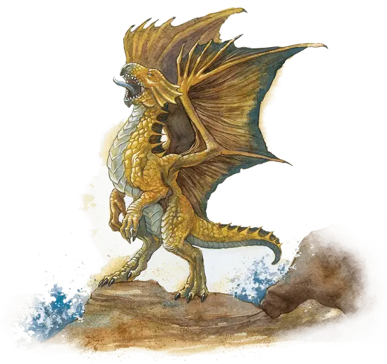

Вирмлинг бронзового дракона
Bronze Dragon Wyrmling
Средний Дракон, законно-добрый

Класс Доспеха 17 (природный доспех)
Хиты 32 (5к8 + 10)
Скорость 30 футов, плавая 30 футов, летая 60 футов
| мод | спас | ||
|---|---|---|---|
| СИЛ | 17 | +3 | +3 |
| ЛОВ | 10 | +0 | +2 |
| ТЕЛ | 15 | +2 | +4 |
| мод | спас | ||
|---|---|---|---|
| ИНТ | 12 | +1 | +1 |
| МДР | 11 | +0 | +2 |
| ХАР | 15 | +2 | +4 |
Навыки Восприятие +4, Скрытность +2
Иммунитет к урону электричество
Чувства слепое зрение 10 футов, тёмное зрение 60 футов, пассивное Восприятие 14
Языки Драконий
Опасность 2 (450 опыта)
Бонус мастерства +2
Особенности
Амфибия. Дракон может дышать и воздухом и под водой.
Персонализация дракона. Как уже говорилось в «Руководстве Мастера», вы можете настроить блок статистики любого дракона, чтобы отразить его уникальный характер. Незначительные изменения, такие как приведенные ниже, легко сделать, и они не влияют на ПО дракона. (Fizban's Treasury of Dragons)
Языки. Большинство драконов предпочитают говорить на Драконьем, но для общения с союзниками и приспешниками изучают Общий. Но, учитывая высокий Интеллект и продолжительный срок жизни, драконы могут легко выучить дополнительные языки. Вы можете добавить языки в блок статистики дракона.
Навыки. Большинство драконов владеют навыками Восприятие и Скрытность, а многие драконы владеют дополнительными навыками. Как и в случае с языками, вы можете изменить список навыков дракона (даже удвоить бонус мастерства), чтобы отразить его интересы и занятия. Вы также можете наделить дракона владениями инструментами, особенно если дракон проводит время в гуманоидной форме.
Другие черты и действия. Вы можете заимствовать черты и действия у других монстров, чтобы придать дракону уникальную изюминку. Рассмотрим эти примеры:
Изменение формы. Вы можете решить, что дракон приобретает это действие в более раннем возрасте, чем обычно, особенно если вы хотите представить в своей кампании дракона в гуманоидной форме. (См. металлические драконы).
Поглощение урона. Вы можете решить, что красный или золотой дракон не только не получает урон от огня, но и исцеляется от него. (См. мясной голем [flesh golem]).
Облёт. Дракон - проворный летун, быстро вылетающий из зоны досягаемости врагов. (См. перитон [peryton]).
Подражание. Изображение персонажей или их союзников может стать забавным трюком для хитрого дракона. (См. кенку [kenku]).
Омоложение. Вы можете решить, что драконы в вашей кампании, будучи неотъемлемой частью Материального плана, почти невозможно уничтожить. Жизненная сущность дракона может храниться в яйце, из которого он появился на свет, в его кладе или в пещерном зале в центре мира, так же как сущность лича спрятана в филактерии. (См. лич [lich]).
Особые чувства. У большинства драконов есть слепое зрение и темное зрение. Вы можете улучшить зрение до истинного зрения или наделить дракона скоростью рытья или чувством вибрации. (См. зрение и свет).
Прокладывание туннеля. Эта особенность может быть присуща любому дракону, обладающему скоростью копания - он может двигаться сквозь твёрдую породу, оставляя за собой туннель. (См. бурый увалень [umber hulk]).
Действия
Укус. Рукопашная атака оружием: +5 к попаданию, досягаемость 5 футов, одна цель. Попадание: Колющий урон 8 (1к10 + 3).
Оружия дыхания (перезарядка 5–6). Дракон использует один из следующих видов оружия дыхания.
• Электрическое дыхание. Дракон выдыхает молнию 40-футовой линией шириной 5 футов. Все существа в этой линии должны совершить спасбросок Ловкости Сл 12, получая урон электричеством 16 (3к10) при провале, или половину этого урона при успехе.
• Отталкивающее дыхание. Дракон выдыхает отталкивающую энергию 30-футовым конусом. Все существа в этой области должны преуспеть в спасброске Силы Сл 12. При провале существо толкается на 30 футов от дракона.
Описание
См. дополнительно статью: "Бестиарий: Драконы"